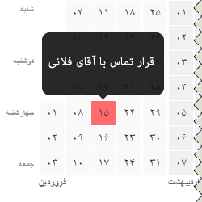

Persian Heat chart
Persian Heat chart. A heat map is a graphical representation of data where the individual values contained in a matrix are represented as colors.
Some Ui Tools Compatible With Persian Layout And Jalali Calendar
Persian Web Toolkit is freely distributable under the terms of the WTFPL license.Persian Heat chart. A heat map is a graphical representation of data where the individual values contained in a matrix are represented as colors.